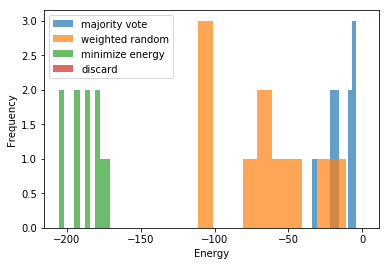

Chain-Break Resolution¶
majority_vote (default)
weighted_random
discard
MinimizeEnergy
import random
# Problem instance
N = 50
h = {}
J = {(i, j): random.randint(-1, 1) for i in range(N) for j in range(i+1, N)}
adjacency = {k: 1.0 for k in J.keys()}
from minorminer import find_embedding
from dwave.embedding import embed_ising
from dwave.system import DWaveSampler
# Embed the problem
dw_sampler = DWaveSampler()
embedding = find_embedding(adjacency, dw_sampler.edgelist)
h0, emb_j = embed_ising(h, J, embedding, dw_sampler.adjacency)
from dwave.cloud import Client
# Solve the problem
with Client.from_config() as client:
solver = client.get_solver()
computation = solver.sample_ising(h0, emb_j, num_reads=10)
import dimod
bqm = dimod.BinaryQuadraticModel.from_ising(h, J)
chains = [embedding[k] for k in embedding.keys()]
from dwave.embedding.chain_breaks import majority_vote, discard, weighted_random, broken_chains, MinimizeEnergy
# Unembed the problem
cbm = MinimizeEnergy(bqm, embedding)
unembedded_minimize_energy, idx_minimize_energy = cbm(computation.samples, chains)
unembedded_majority_vote, idx_majority_vote = majority_vote(computation.samples, chains)
unembedded_weighted_random, idx_weighted_random = weighted_random(computation.samples, chains)
unembedded_discard, idx_discard = discard(computation.samples, chains)
import matplotlib.pyplot as plt
%matplotlib inline
plt.hist([dimod.ising_energy(sample, h, J) for sample in unembedded_majority_vote], alpha=0.7, label='majority vote')
plt.hist([dimod.ising_energy(sample, h, J) for sample in unembedded_weighted_random], alpha=0.7, label='weighted random')
plt.hist([dimod.ising_energy(sample, h, J) for sample in unembedded_minimize_energy], alpha=0.7, label='minimize energy')
plt.hist([dimod.ising_energy(sample, h, J) for sample in unembedded_discard], alpha=0.7, label='discard')
plt.xlabel('Energy')
plt.ylabel('Frequency')
plt.legend()
plt.show()

broken_chains(computation.samples, chains)
array([[ True, True, True, True, True, True, True, True, True,
True, True, True, False, False, True, True, True, True,
True, True, False, True, False, True, True, True, True,
False, True, True, True, False, True, True, True, True,
True, True, True, True, True, True, True, True, False,
True, True, True, True, True],
[ True, True, True, True, True, True, True, True, True,
True, True, True, True, False, True, True, True, True,
False, True, True, True, True, True, True, True, True,
True, True, True, True, True, True, False, True, False,
True, True, True, True, True, False, True, False, True,
False, True, False, False, True],
[ True, True, False, True, True, True, True, True, True,
True, True, True, True, True, False, True, True, True,
True, True, True, True, True, True, True, False, True,
True, True, True, True, False, True, True, True, True,
True, True, True, True, True, True, True, True, True,
True, True, True, True, True],
[ True, True, False, True, True, True, True, True, True,
True, False, True, True, False, True, True, True, True,
True, True, False, True, True, True, True, True, True,
True, True, True, True, False, True, True, True, True,
True, True, True, True, False, True, True, True, False,
True, True, True, True, True],
[ True, True, False, True, True, True, True, True, True,
True, False, True, True, False, True, True, True, True,
True, True, False, True, True, True, True, True, True,
True, True, True, True, False, True, True, True, True,
True, True, True, True, False, True, True, True, False,
True, True, True, True, True],
[ True, True, True, False, True, True, True, True, True,
True, True, True, True, True, True, True, True, True,
True, True, True, True, False, True, True, True, True,
True, True, True, True, True, True, True, True, True,
True, True, True, True, True, False, True, True, True,
True, True, True, True, True],
[ True, True, True, False, True, True, True, False, True,
True, True, True, False, True, False, True, True, True,
True, True, True, True, False, True, True, True, True,
True, True, True, True, True, True, True, True, True,
False, True, True, True, True, True, True, True, True,
True, True, True, True, True],
[ True, True, True, True, True, True, True, True, True,
True, True, True, False, True, True, True, False, True,
True, True, True, True, False, True, True, True, True,
False, True, False, True, True, True, True, True, True,
True, True, True, True, True, True, True, True, False,
True, True, True, True, False],
[ True, True, False, True, True, True, True, True, True,
True, True, True, False, True, True, False, True, True,
True, True, True, True, True, True, True, True, False,
True, True, True, True, False, False, True, True, True,
True, True, True, True, True, True, True, True, True,
True, True, True, True, True],
[ True, True, True, True, True, True, True, True, True,
True, True, True, True, True, True, True, True, True,
True, True, True, True, False, True, True, True, True,
True, True, True, True, True, True, True, True, True,
True, True, True, True, True, True, True, True, True,
True, True, True, False, True]])
from dwave.embedding import unembed_sampleset
embedded = dimod.SampleSet.from_samples(
computation.samples, dimod.SPIN, computation.energies)
unembed_sampleset(embedded, embedding, bqm) # default: majority_vote
# unembed_sampleset(embedded, embedding, bqm, chain_break_method=majority_vote)
# unembed_sampleset(embedded, embedding, bqm, chain_break_method=weighted_random)
# unembed_sampleset(embedded, embedding, bqm, chain_break_method=discard)
SampleSet(rec.array([([0, 1, 0, 0, 1, 0, 0, 0, 0, 0, 0, 0, 1, 0, 0, 0, 1, 1, 0, 0, 1, 0, 1, 1, 0, 0, 0, 0, 0, 0, 0, 1, 1, 1, 1, 0, 0, 0, 0, 0, 1, 0, 0, 0, 0, 0, 0, 0, 1, 0], -17., 1),
([0, 0, 0, 1, 1, 0, 0, 0, 1, 0, 0, 0, 0, 0, 0, 0, 0, 0, 0, 0, 0, 0, 0, 1, 0, 0, 1, 0, 0, 0, 0, 0, 0, 1, 0, 0, 0, 0, 0, 0, 0, 1, 0, 0, 0, 0, 0, 1, 1, 0], -7., 1),
([0, 0, 0, 1, 0, 0, 0, 0, 0, 0, 1, 0, 0, 1, 0, 0, 0, 0, 0, 0, 0, 0, 0, 0, 0, 1, 1, 0, 0, 0, 0, 0, 1, 0, 0, 0, 1, 0, 0, 0, 0, 0, 1, 0, 1, 0, 0, 0, 0, 0], -6., 1),
([0, 1, 1, 1, 1, 0, 0, 0, 0, 0, 0, 0, 0, 0, 0, 0, 1, 1, 1, 0, 1, 0, 0, 0, 0, 0, 0, 0, 1, 0, 0, 1, 0, 0, 0, 0, 0, 0, 0, 0, 1, 0, 0, 0, 0, 0, 0, 0, 0, 0], -20., 1),
([0, 1, 1, 0, 1, 0, 0, 0, 0, 0, 0, 0, 0, 0, 0, 0, 1, 1, 1, 0, 1, 0, 0, 0, 0, 0, 0, 0, 1, 0, 0, 1, 0, 0, 0, 0, 0, 0, 0, 0, 1, 0, 0, 0, 0, 0, 0, 0, 0, 0], -19., 1),
([0, 0, 0, 0, 0, 0, 0, 0, 0, 0, 0, 0, 0, 1, 1, 0, 0, 1, 1, 1, 0, 1, 0, 0, 0, 0, 0, 1, 1, 1, 0, 0, 0, 0, 0, 1, 0, 0, 0, 0, 0, 0, 0, 0, 0, 1, 0, 0, 0, 0], -10., 1),
([0, 0, 0, 0, 1, 0, 1, 0, 0, 1, 1, 0, 1, 0, 1, 1, 1, 1, 0, 0, 0, 0, 1, 1, 0, 0, 0, 0, 0, 1, 0, 1, 0, 0, 0, 0, 0, 0, 0, 0, 0, 1, 0, 0, 0, 0, 0, 0, 0, 0], -22., 1),
([0, 1, 0, 0, 1, 0, 1, 0, 0, 0, 1, 0, 1, 0, 0, 0, 1, 1, 1, 0, 1, 0, 1, 1, 0, 0, 0, 0, 1, 0, 0, 1, 0, 0, 0, 0, 1, 0, 0, 0, 1, 0, 0, 1, 0, 0, 1, 1, 1, 0], -34., 1),
([0, 0, 0, 0, 0, 0, 1, 0, 0, 0, 1, 0, 1, 1, 0, 0, 0, 0, 0, 0, 1, 0, 0, 0, 0, 1, 1, 0, 0, 0, 0, 0, 1, 0, 0, 0, 0, 0, 0, 0, 0, 0, 0, 0, 1, 1, 0, 0, 0, 0], -4., 1),
([0, 0, 0, 0, 0, 0, 0, 0, 0, 0, 1, 0, 0, 0, 0, 0, 0, 0, 0, 0, 1, 0, 0, 0, 0, 1, 0, 0, 0, 0, 0, 0, 0, 0, 0, 0, 0, 0, 1, 0, 0, 1, 0, 0, 1, 1, 0, 0, 0, 0], -8., 1)],
dtype=[('sample', 'i1', (50,)), ('energy', '<f8'), ('num_occurrences', '<i8')]), [0, 1, 2, 3, 4, 5, 6, 7, 8, 9, 10, 11, 12, 13, 14, 15, 16, 17, 18, 19, 20, 21, 22, 23, 24, 25, 26, 27, 28, 29, 30, 31, 32, 33, 34, 35, 36, 37, 38, 39, 40, 41, 42, 43, 44, 45, 46, 47, 48, 49], {}, 'SPIN')
unembed_sampleset(embedded, embedding, bqm, chain_break_method=cbm) # cbm = MinimizeEnergy(bqm, embedding)
SampleSet(rec.array([([ 1, -1, -1, -1, 1, 1, -1, 1, -1, 1, 1, -1, 1, -1, -1, -1, -1, 1, -1, -1, 1, -1, 1, 1, 1, 1, -1, -1, -1, 1, -1, 1, -1, 1, 1, -1, -1, -1, -1, 1, 1, 1, 1, 1, -1, -1, -1, 1, 1, 1], -179., 1),
([-1, -1, -1, -1, 1, 1, -1, 1, -1, -1, 1, -1, 1, -1, 1, -1, 1, 1, -1, -1, 1, -1, 1, 1, -1, 1, 1, 1, 1, 1, -1, -1, -1, 1, 1, -1, -1, 1, -1, 1, -1, 1, -1, -1, -1, -1, 1, 1, 1, 1], -179., 1),
([-1, -1, -1, 1, -1, -1, -1, 1, 1, -1, 1, -1, -1, -1, -1, 1, -1, -1, -1, 1, -1, -1, 1, 1, -1, 1, 1, -1, 1, -1, 1, -1, -1, 1, 1, -1, 1, 1, 1, -1, 1, 1, 1, -1, 1, -1, 1, 1, 1, -1], -187., 1),
([ 1, 1, 1, -1, 1, -1, -1, -1, -1, 1, -1, 1, 1, -1, 1, -1, 1, 1, 1, -1, 1, 1, 1, 1, 1, -1, -1, 1, 1, 1, -1, 1, 1, -1, 1, 1, -1, -1, -1, 1, 1, -1, -1, 1, -1, 1, -1, -1, -1, 1], -193., 1),
([ 1, 1, 1, -1, 1, -1, -1, -1, -1, 1, -1, 1, 1, -1, 1, -1, 1, 1, 1, -1, 1, 1, 1, 1, 1, -1, -1, 1, 1, 1, -1, 1, 1, -1, 1, 1, -1, -1, -1, 1, 1, -1, -1, 1, -1, 1, -1, -1, -1, 1], -193., 1),
([ 1, 1, 1, -1, -1, 1, 1, -1, 1, 1, -1, 1, 1, 1, 1, 1, 1, -1, 1, 1, -1, 1, -1, -1, 1, -1, 1, 1, -1, 1, 1, -1, 1, -1, -1, 1, -1, -1, -1, -1, -1, -1, 1, 1, 1, 1, 1, -1, -1, -1], -171., 1),
([ 1, 1, 1, -1, 1, 1, -1, -1, -1, 1, 1, 1, 1, -1, 1, -1, -1, 1, -1, -1, 1, 1, 1, 1, 1, -1, -1, 1, -1, 1, -1, 1, -1, 1, 1, 1, -1, -1, -1, 1, 1, -1, -1, 1, -1, -1, -1, 1, 1, 1], -205., 1),
([-1, -1, 1, 1, 1, -1, 1, 1, -1, 1, 1, -1, 1, 1, -1, 1, 1, -1, 1, -1, 1, -1, 1, 1, -1, -1, -1, -1, 1, -1, 1, 1, 1, -1, -1, 1, 1, 1, 1, 1, 1, 1, 1, 1, -1, 1, 1, -1, -1, -1], -185., 1),
([-1, -1, -1, 1, -1, 1, 1, 1, 1, -1, 1, -1, 1, 1, -1, -1, 1, -1, -1, 1, -1, -1, -1, -1, -1, 1, 1, -1, -1, 1, 1, -1, 1, 1, -1, -1, 1, 1, 1, -1, -1, 1, 1, -1, 1, 1, 1, 1, 1, -1], -175., 1),
([-1, -1, -1, 1, -1, -1, 1, 1, 1, -1, -1, 1, -1, 1, -1, 1, 1, -1, 1, 1, -1, 1, -1, -1, -1, -1, 1, -1, 1, -1, 1, -1, 1, -1, -1, -1, 1, 1, 1, -1, -1, 1, 1, -1, 1, 1, 1, -1, -1, -1], -203., 1)],
dtype=[('sample', 'i1', (50,)), ('energy', '<f8'), ('num_occurrences', '<i8')]), [0, 1, 2, 3, 4, 5, 6, 7, 8, 9, 10, 11, 12, 13, 14, 15, 16, 17, 18, 19, 20, 21, 22, 23, 24, 25, 26, 27, 28, 29, 30, 31, 32, 33, 34, 35, 36, 37, 38, 39, 40, 41, 42, 43, 44, 45, 46, 47, 48, 49], {}, 'SPIN')